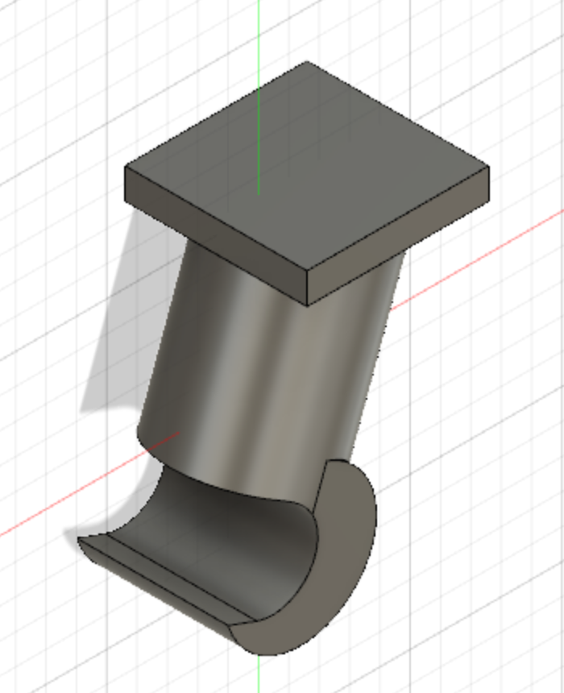
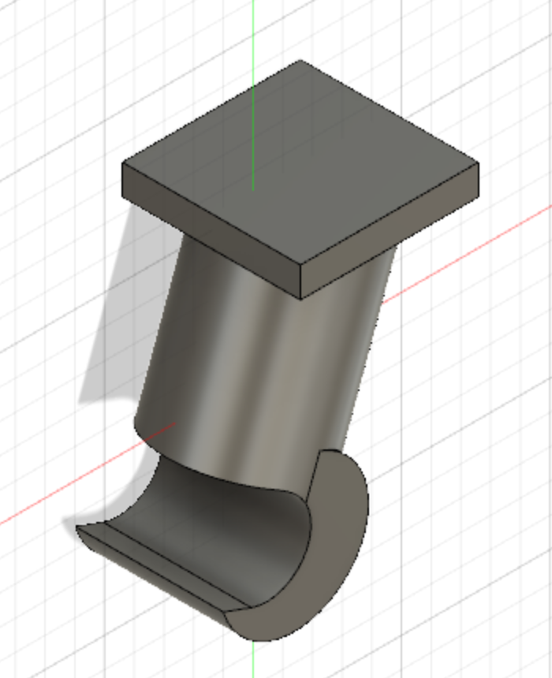

Project 5 - CNC milling for silicone mold
Project description
The purpose of this project will be to make an object in conjunction with project 4. In project 4 Arnór Breki and I made a simple bookcase using a CNC machine in FabLab. This time around we will be making a hook that can hold a pair of headphones and is attached to the bookcase. This hook will be made by pouring resin into a silicone mold and the silicone mold will be made by pouring silicone into a wax negative of the mold which is made in a CNC machine.
Unfortunately when it came time to manufacture the object Covid struck again in Iceland making it impossible for everybody to manufacture their piece, so that part of the assignment was dropped.
On this page I will document the project process.
Project 4 - recap
As mentioned above project 4 and 5 are connected. In project 4 Arnór Breki and I made a bookcase out of wood with a CNC machine. The bookcase was designed in Fusion 360 and the whole process can be found on Arnórs page. Project 4 and 5 are supposed to be connected so we decided to create something that could be part of the bookcase for project 5. We decided on making a hook that would be on the bottom of the bookcase and could hold a pair of headphones.

Designing the hook
First thing I did was to make a rough sketch of the design on my Ipad. Once I was happy with the general shape of the design I went into Fusion and started drawing. The idea was to have a rectangle bottom that could be drilled to the bookcase. Then to have a slanted cylinder from the bottom with a hook at the end to wrap around the headphones.
The hook was then designed in Fusion 360. It was mostly made out of premade shapes, rectangles and cylinders. Then it was just a matter of tinkering around with various parameters till everything looked nice and functional.
 

Once I had finished the design it was time to make the mold. To do that I followed this video that was in the project description. To make the mold the object was placed at the origin and a box was made around it, with the object centered in the middle. The object was then subtracted from the box and you’re left with a negative of the object. Then a hole is drilled on the side of the box where resin can be poured in. Instructions on how to make the hole and the rest of the design process can be found in this video. Then the box is split in two, and four half spheres are added on one side and subtracted from the other (so that the mold can lock together).
Now the sides of the box are separated and placed next to each other with the hollow side facing up. Then another box is made and placed around the two smaller boxes, the dimension of the big box is 200mm x 300mm x 50mm(this is the dimensions of the piece of wax Arnór and I were going to supply and mill out of). Now the smaller boxes are subtracted from the bigger box like is described in the video. Now what's left is a box that is milled out of wax. Then silicone is poured into the box, making the molds that the resin is then poured into.
Manufacturing the object
Now the design process is over and we can move over to manufacturing. As was mentioned before, because of Covid we could not manufacture the object. So instead I made a simulation of the milling in Fusion. To make the toolpaths I followed this video from the project description. For the first pass I used a 3.125mm flat end mill. The first pass was made with 3D Adaptive Clearing which is a rough milling strategy to clear out large quantities of material effectively. The machining time for this procedure was estimated at 2:30:40.
The last two passes were made with a 3.125mm bull nose mill end to make everything smoother. The passes were 3D parallel passes, first from 0° and then from 90°. The machining times for these procedures were estimated to be 0:57:58 and 1:00:49 respectively.
The total machining time was estimated to be 4:29:57. Now if we had gone ahead with the manufacturing the process would have been as follows:
1. CNC milling out of wax.
2. Pouring silicone into the wax box.
3. Putting the silicone mold together and pouring resin in through the hole on the side.
4. Once the resin has cured the object is ready.
Useful links and files
Preparing mold for milling
Making toolpaths in fusion
All design files
Project workload
| Brainstorming and sketching idea | 1 hour |
| Drawing in Fusion | 4 hours |
| Getting mold ready in Fusion | 4 hours |
| Making toolpaths and simulations | 2 hours |
| Documenting on website | 5 hours |
| Total | 16 hours |